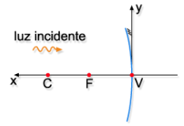
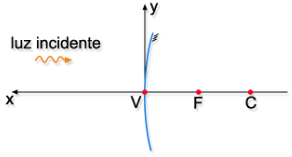
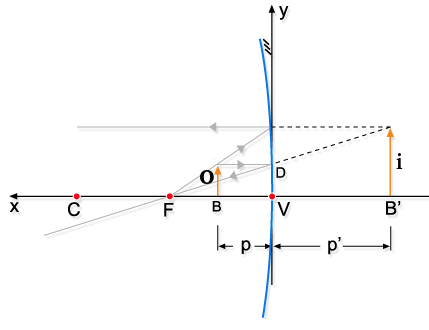

Aula7-58: Análise algébrica dos espelhos esféricos
Equação dos pontos conjugados (equação de Gauss)
A equação de Gauss é uma fórmula matemática que, em função do foco do espelho e da posição do objeto, nos permite encontrar a posição da imagem gerada.
Em que:
◦ f é o foco;
◦ p é a posição do objeto (medida da abcissa);
◦ p’ é a posição da imagem (medida da abcissa).
Equação do aumento linear transversal
Esta equação nos fornece um número diretamente proporcional à ampliação da imagem formada.
➔ CONVENÇÃO DE SINAIS
⚛ Convenção de sinal para o parâmetro foco: é determinado, por convenção, que a posição dos elementos é dada a partir do sistema de coordenadas apresentado abaixo. Daí segue o sinal para os focos:
|
ESPELHO CÔNCAVO (f > 0) |
ESPELHO CONVEXO (f < 0) |
|
|
 |
 |
⚛ Convenção de sinais para os demais parâmetros: os parâmetros restantes possuem sinais que independem do tipo de espelho.
 |
o > 0 (+): Objeto direto
p > 0 (+): Objeto real
p' > 0 (+): Imagem real p' < 0 (-): Imagem virtual i > 0 (+): Imagem direita i < 0 (-): Imagem invertida |